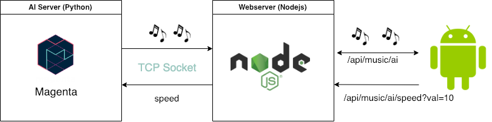

Music streaming app powered by AI (Part 1)
In this series I’ll go through on how I did an app that streams songs generated by artificial intelligence.
What will be covered ?
- Discussion on the system design for this simple application.
- Brief discussion on how music is generated by AI
- Implementation details with code samples.
Artificial intelligence is capable of composing compelling music ?
The short answer is: it depends. First of all, music taste is something unique to each person. What sounds good to me maybe does not sound good to you. AI may compose music in many different ways, but here I’ll focus in songs entirely composed from scratch by AI. In one way or another, AI music generation is by itself very impressive.
How AI creates music ?
We’re capable to train Machine Learning models over a dataset of thousands of songs. After trained, this model has learned how to compose music. In other words, machine learning models are capable of extracting music patterns from bits and reproduce them.
Google Magenta
Google Magenta is a project from Google Brain that focus in ML models in the music generation field. There are a bunch of other alternatives out there, as IBM Watson, but Magenta is open source and very promising.
Prove of concept
In order to prove the concept that AI can compose music and that we can apply it in a real world situation, I came with this project idea. The idea is simple: an app powered with AI that generates songs according to someone’s pace. Therefore, IA will track your speed using your mobile phone and will create songs based on that.
The architecture
What we gonna need:
- A server hosting the AI model
- A client application that plays music (Android app)
- A webserver serving as bridge between both (Nodejs)
The webserver is optional, the ML host and the webserver can be one. However, I kind like microservices architecture so I decided to keep them separate. I’ve chosen Magenta as my intelligent music generator and I wrote a Python server that will transfer generated songs to the webserver via a TCP Socket. For the client I reused an Android app that I did a couple of years ago. The app was powered with Spotify API but now I’m replacing it with my own AI powered API. You can check the code in my Github Repo. Finally, for the webserver I wrote it using Nodejs. I always wanted to try it and it was just the right chance to do so :)
So, the entire (yet simple) architecture looks like this

The way all components work together is like the following. The app keep tracking your pace using you mobile’s GPS and send updates continuously to the webserver. Then the webserver create a TCP socket with the AI server in order to request for songs and to receive them as .wav files. As soon as the AI server receive requests, it uses a pre-trained ML model to generate a new song and send it back to the webserver that, finally, pipe it back to the client.
Conclusion and Next steps
Summing up, until now we know that Magenta generate songs as .wav files and transfer them to the client using TCP Sockets. In the next article I will go deeper on how Magenta do its magic and how I adapted it to the needs of my application.
If you have any thoughts do not hesitate to contact me via email or twitter.